滚轮 / 双指缩放 · 按住拖动平移 · 双击回到原始大小 · ← → 切换 · ESC 关闭
求职方向：新媒体运营实习生（小红书 / 微信公众号 / 微博方向） · 广东外语外贸大学南国商学院 · 市场营销
独立运营抖音、小红书一年（2025.09 – 2026.09，断续更新），累计 42 条原创内容。我不追"爆款玄学"，只做一件事——同一段时间内只改一个变量，用前后数据验证假设。以下全部为账号后台真实数据。
对照组 A · 跟热点——22 条清唱中，我跟风当时热点的其中一条，在内容质量一般的情况下拿到 1075 播放；同期五条同质量的日常作品播放为 17 / 75 / 104 / 520 / 442（均值约 232），跟热点那条约为同期均值的 4.6 倍。
对照组 B · 修音——相邻两条作品只差「修音」一个变量：修过的那条播放量多出近 400，点赞由 10 增至 22，且点赞转化率高于近一个月的平均水平。作品截图见「05 · 抖音」。
换赛道本身就是最大的一次变量调整：翻唱期同期均值约 232 浏览，随笔期 6 条均值约 2620 浏览，抬了一个数量级。下面是随笔期 7 条内容的完整序列——每一步只动一个变量，数据均来自账号后台。
DeepSeek 服务异常当天，我第一时间截图发布一句话笔记，单篇 5341 浏览 / 53 赞；随后在评论区逐条回应「好了踢我下」的留言用户，累计互动 150。
复盘发现：这类信息型内容的评论区是点赞的近 3 倍——用户来评论区是「问进度」，不是表达喜欢。所以运营动作应放在评论区维护，而不是催更内容。
5 分半长叙事视频在抖音、小红书均只有约 120 播放——判断这类内容应投放长视频平台，而不是硬塞进快节奏分发。
争议性话题在小红书容易起量，在抖音则容易被视为「起号」引发反感——同一内容，两个平台命运不同，需要按平台调性分配。
中国大学生广告艺术节学院奖 2026 春季征集大赛（中国广告协会主办，覆盖全国 1830 所高校），命题品牌：芙美松（仙琚制药）。最终获优秀奖。策划案由我独立制作——从洞察、IP 设计到全部页面制作——实际制作约 1 个月，经历 3 次大版本重构。
点击任意图片可放大查看细节——放大时加载原分辨率高清图，支持滚轮 / 双指缩放与拖动平移，可放到 8 倍看清物料上的小字
初版走古风水墨（从「芙美松」的芙蓉意象出发），二版转医疗清新，都差点意思。直到指导老师反馈「网感不足」，我往回推了一层：医药品牌真正的障碍不是不够专业，是让人有心理防线。所以解法不是把画面做精致，是先把心理防线降下来——整体改为可爱轻松风格，并把「痒」这种说不清的感受做成一只小怪物。
核心创意概念：让芙美松充当陪伴者与倾听者，陪着用户把「痒」说清楚，再引导科学用药。
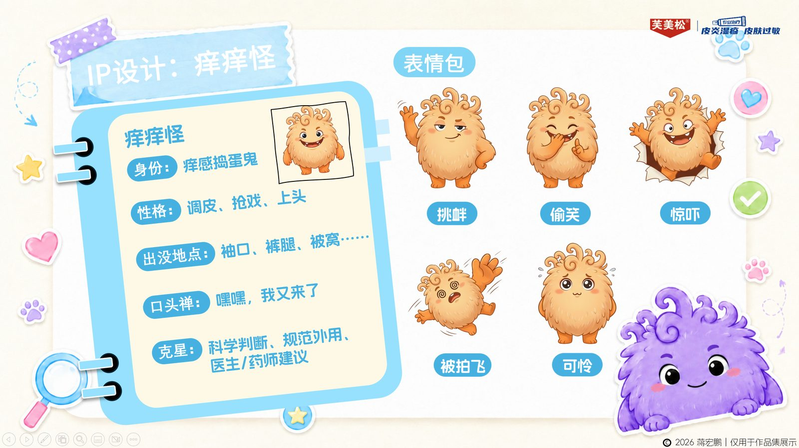
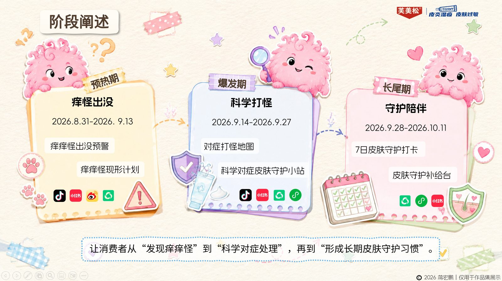
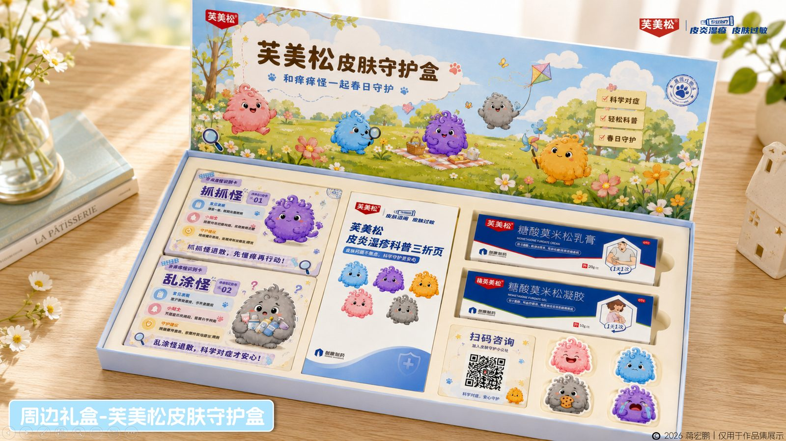
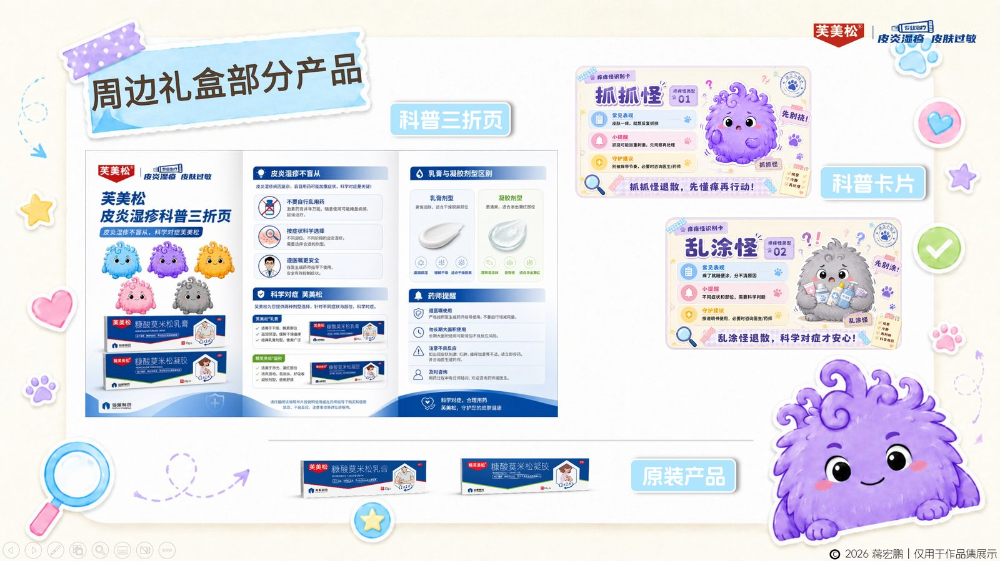
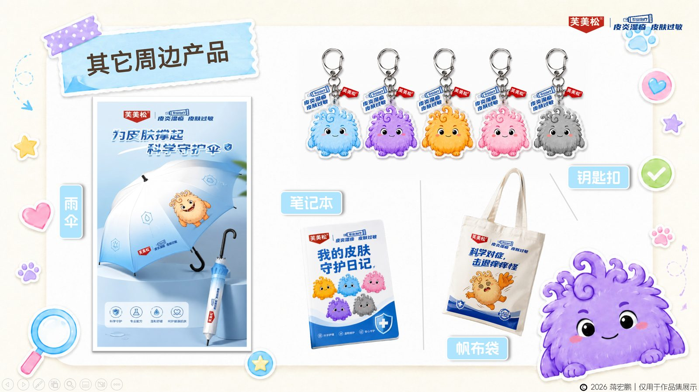
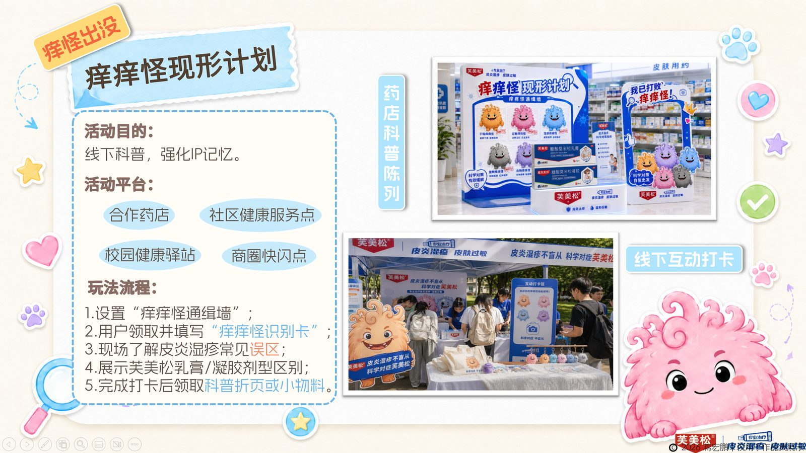
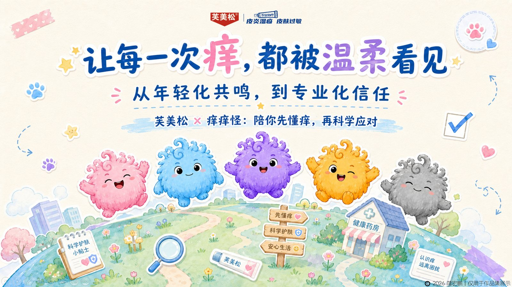
两条内容主线：生活探店的轻量表达与热点 / 情绪观察。从探店起步，逐渐演化出更轻、更快、更贴平台语境的表达方式。
起号时做的是食堂探店——用真实校园场景先把「真人感」立住；后来发现小红书的浏览语境不需要完整记录，于是把同样的生活观察压成一句话 + 一张图的轻量形态；遇到热点时则用最快速度出内容。
最有效的一次是热点内容：DeepSeek 服务异常当天我第一时间发布，单篇 5341 浏览 / 53 赞 / 150 评论。复盘时我发现一个更有用的东西——这类信息型内容的评论数是点赞的近 3 倍，因为用户来评论区是「问进度」，不是表达喜欢。所以那次我把力气放在评论区逐条回应，而不是催自己去更新。
结论：内容负责把人拉进来，评论区负责把人留下。运营动作应该跟着内容类型走。
下面是 3 篇代表作缩略图，点击可放大看原文（支持滚轮 / 双指缩放）
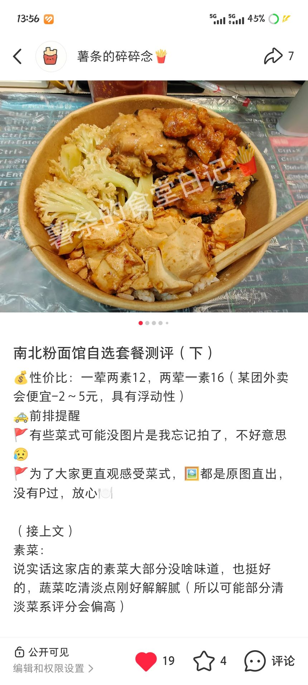
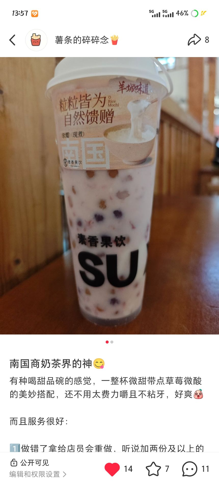
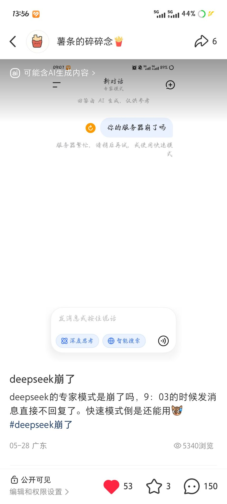
下面是 3 篇笔记的小红书官方后台数据卡，点击放大可看平台原始数据
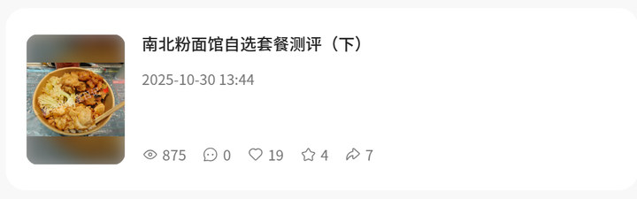
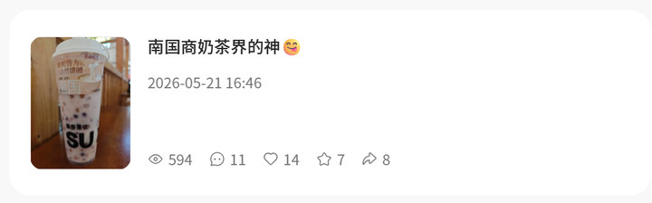
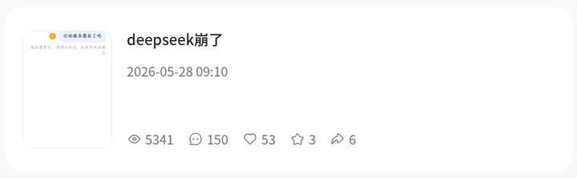
广州四季酒店品牌推广视频（文旅比赛参赛作品），2 天内从脚本到成片全流程独立交付。分工：AI Agent 统筹脚本构思与分镜拆解、按镜头分步下达指令；画面素材调用豆包 / 即梦生成；字幕、音乐、节奏与成片剪辑由我用剪映完成。
一年里发过 31 条，主要是两个阶段：翻唱期 22 条清唱——用两组单变量对照找出真正有用的动作；随笔期 7 条——一次完整的赛道切换实验。所有数据取自账号后台，截图只是佐证，可点击放大看原图。
相邻发布的两条作品，同一个人、同一首歌、同一录制条件，只差「有没有修音」。
两条作品的创作者后台原始数据卡（点击放大）：
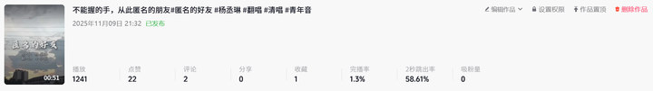
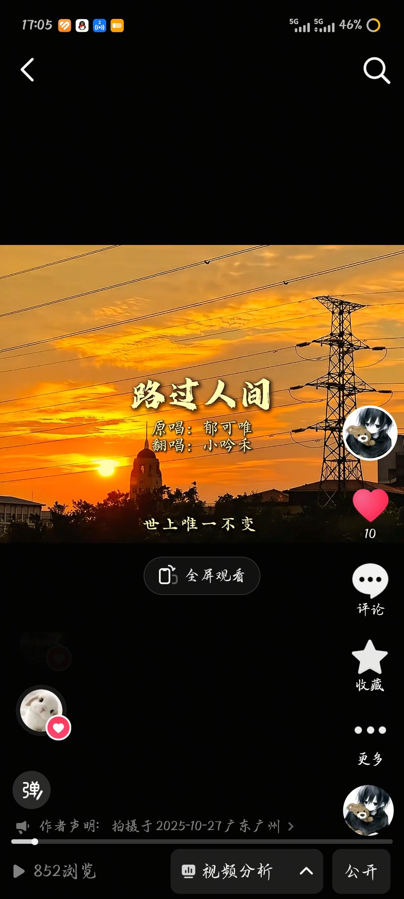
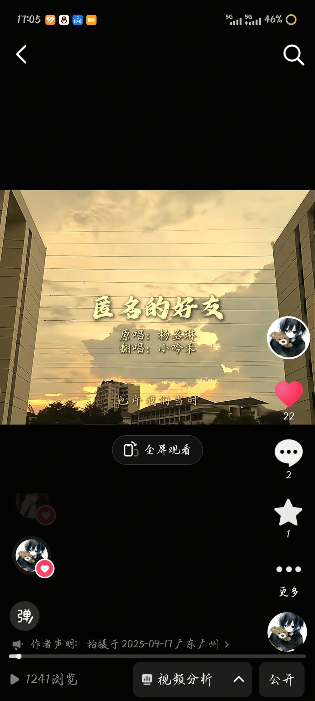
说明：这组数据只支持「修音有效」这一个结论。我没有做完「配伴奏」的对照组，且清唱质量本身并不稳定，所以不对外声称「配上伴奏就会更好听」。
拿一条我自己判断内容质量一般的跟风热点作品，去比同期五条同水平的日常作品。
六条作品的创作者后台原始数据卡（点击放大）：
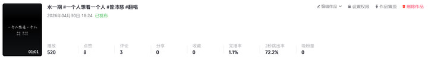
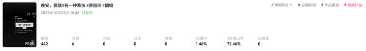
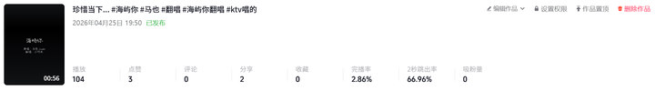
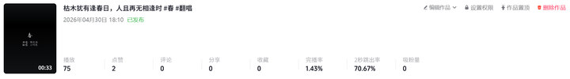
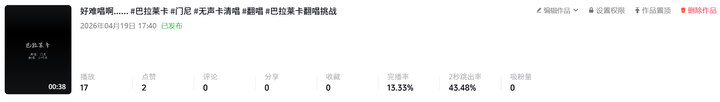
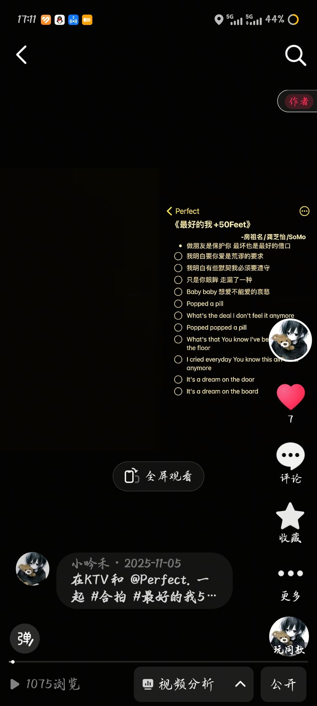
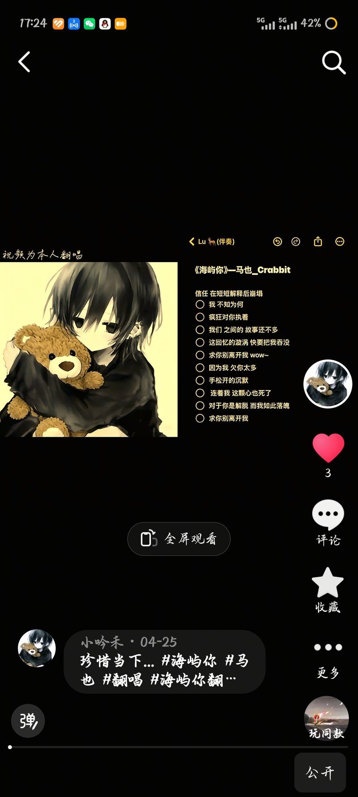
结论：选题的分发权重大于精修——内容一般但踩中热点，播放能到同期平均的 4.6 倍；修音带来的提升是几十个百分点。资源有限时，先押选题。
从幽默记叙文起步，逐步改字数、换文体、换情绪方向，直到最后用 AI 翻拍做反向验证。下表是全部读数，解读见01 板块的实验 B。
| # | 这一轮改了什么 | 字数 | 浏览 | 赞 | 评 / 藏 |
|---|---|---|---|---|---|
| ① | 起点基准：幽默风趣记叙文 | 1595 | 4143 | 46 | 3 / 3 |
| ② | 只砍字数，幽默路线不变 | 303 | 4425 | 31 | 2 / 1 |
| ③ | 换文体：34 字现代短诗（模仿） | 34 | 1127 | 41 | 2 / 4 |
| ④ | 换题材：感情故事长文（全账号峰值） | 2552 | 4283 | 58 | 12 / 13 |
| ⑤ | 沿用 ④ 的题材，第一次复现 | 2015 | 867 | 19 | 9 / 0 |
| ⑥ | 沿用 ④ 的题材，第二次复现 | 2320 | 875 | 32 | 2 / 4 |
| ⑦ | 反向验证：AI 翻拍同风格内容 | — | 7 | — | — |
三条结论：① 字数改写不影响触达——② 砍到 303 字浏览反而微涨；② 关键在情绪形态——短诗用 34 字拿到全序列最高的点赞率 3.6%；③ 同一题材重复第三次就失效——④ 到 ⑤ 浏览掉到五分之一，而 ⑥ 字数与质量都接近 ④，也只有 875。所以是「篇幅管触达、情绪形态管转化、题材新鲜度管衰退」。
下面是 7 条作品的后台截图缩略图，点击放大可看原分辨率（支持滚轮 / 双指缩放，最大 8 倍）
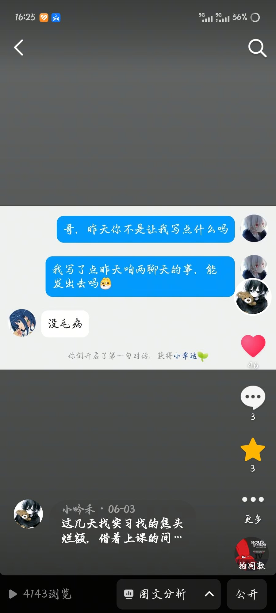
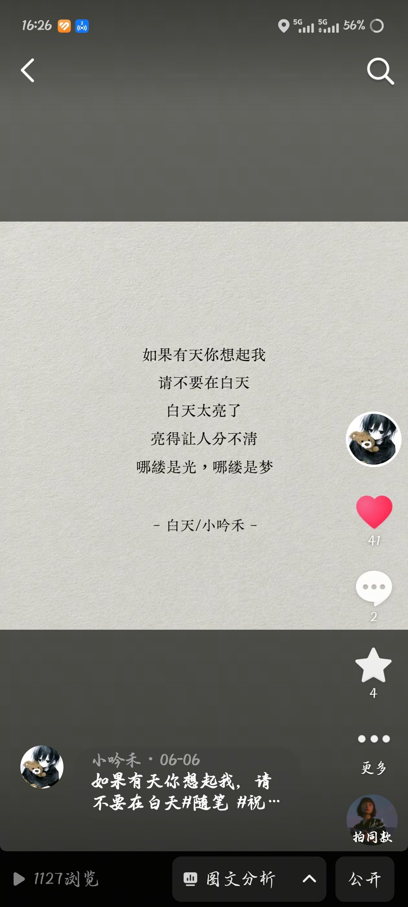
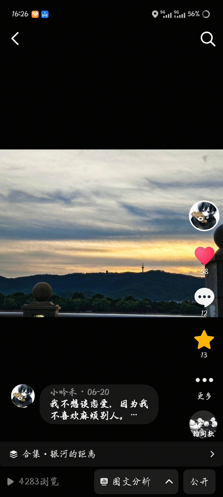
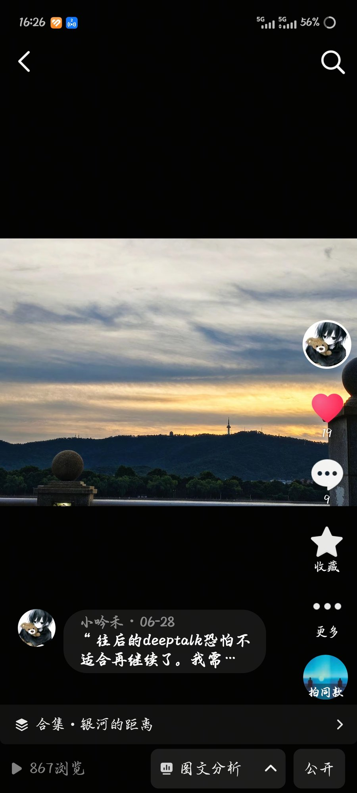
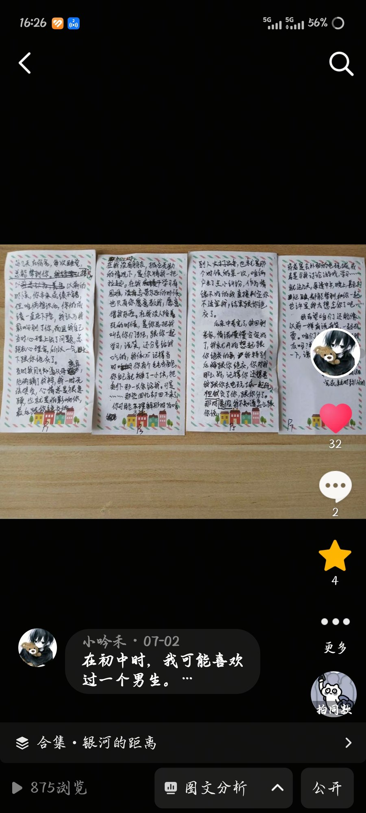
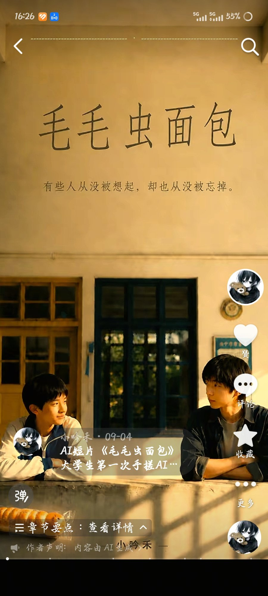
随笔序列在创作者后台的列表总览（含播放 / 点赞 / 评论 / 完播率等完整字段，点击放大）：
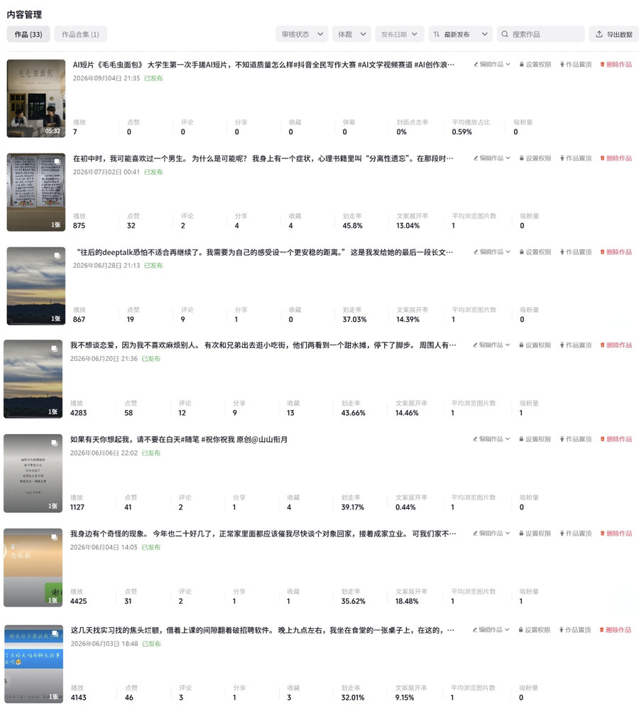